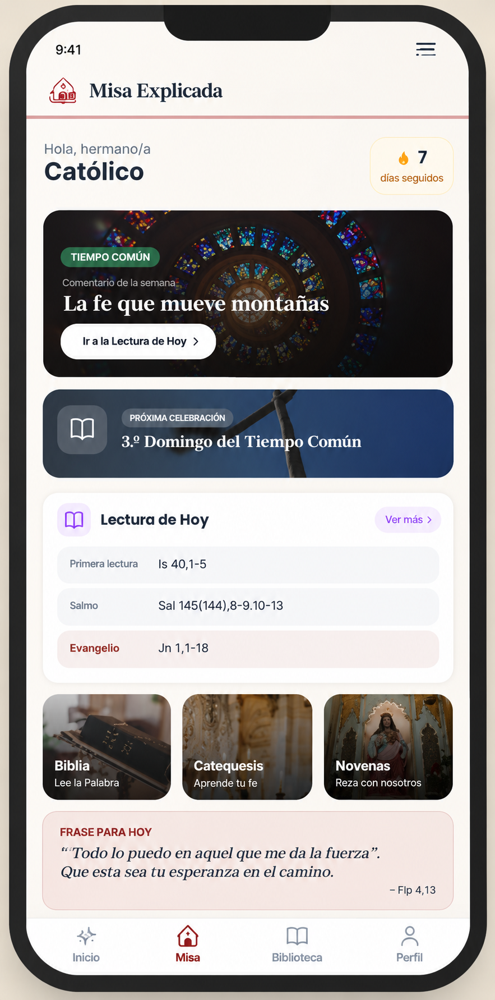

Estás a un paso de completar tu acceso
98%
La app que te explica la Santa Misa de cada día, ¡con un solo clic!
¿Domingo? ¿Cuaresma? ¿Adviento? La app te trae la reflexión del día, el tiempo litúrgico y las lecturas explicadas en pocos minutos. La Santa Misa, contigo, todos los días.

Actívala ahora haciendo clic en el botón de abajo.
Cargando tu oferta…